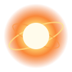
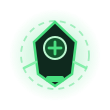

ARK EXODUS
Пошаговый кризисный Survival Management о последнем корабле-ковчеге человечества. Земля уничтожена. Веди станцию EXODUS-0 и 1 000 колонистов в криокапсулах через ветвящуюся галактику, преобразуя Энергию в ресурсы, спасая выживших и захватывая малые звёзды прямо в Реактор под кометным обстрелом.

О чём игра и что делает игрок
- Пошаговая экономика «Энергия → любой ресурс»: станция оснащена синтезаторами (Огороды, O₂, Сплавы/Компоненты, Щиты и Орудия, Медблок, Шлюз). Каждый назначенный человек тратит МВт энергии и даёт ресурс за ход — игрок видит точный прогноз до конца хода.
- Спираль масштабирования и дефицита: старт с 8 людьми и жёсткими минусами. Спасаешь потерянный экипаж в системах (8 → 15+ чел.), расширяешь слоты отсеков апгрейдами — но каждый новый человек увеличивает расход O₂, Еды и энергии.
- 3 масштаба с бесшовным зумом (как в Spore): 2D-разрез Ковчега с анимированными интерьерами → 3D-карта Системы под углом 55° (экспедиции на 3–5 ходов с ЧП) → 3D спиральная Галактика (выбор маршрута по общей разведке).
Чем выделяется и почему хочется играть дальше

Захват Звезды в Реактор (многоходовая осада): модернизация отсека Реактора даёт лишь слоты инженеров — усилить само ядро можно только захватом малой звезды (4–6 ходов). Захват сжирает энергию и вызывает волны комет, расходуя Оружие и Щит каждый ход.

10-ходовые угрозы (горизонт планирования): «Космический десант» и Дредноут «Карантин» засекаются за 10 ходов. Игрок решает: копить Щит/Оружие ради боя и трофеев, сжигать Гелий-3 на смену маршрута (+5 ходов) или откупаться людьми и припасами.

Живой корабль: в каждом отсеке анимированные космонавты с ролевыми циклами (лейка с каплями и лопатка в Огородах, сварка, турель, ЭКГ) + адаптивный саундтрек.
Коммерческий потенциал (Steam)
- Проверенная ниша: гибриды FTL / Frostpunk / IXION стабильно дают высокий средний чек и длинную вишлист-воронку.
- Позиционирование: $12.99 (2–3 часа на забег, высокая реиграбельность через разные классы Ковчегов, ветки галактик и концовки).
- Органика и виральность: 3-масштабный зум (разрез с человечками → 3D-галактика) и кометные осады отлично считываются в 15-секундных роликах TikTok / YouTube Shorts и на стримах.
Проверка баланса и AI-пайплайн
- Единый источник правды: все параметры в
ark_balance.json, проверяются Python-симулятором (200 полных кампаний). - Подтверждённый темп: медиана прохождения прототипа — 71 ход (~45 мин), 70% побед у рационального бота (реальный дефицит O₂/боезапаса), расход ~126 Оружия и ~56 Щита.
- Техбаза прототипа: чистый HTML5/JS/Canvas 2D, 18 векторных SVG, процедурный адаптивный Web Audio — 0 внешних зависимостей, мгновенный запуск.
Масштабирование полной версии
- Профессии экипажа: Инженеры, Биологи, Стрелки, Медики с перками и моральной психологией.
- Мета-прогрессия: 3 стартовых Ковчега с разными механиками + процедурная генерация галактик и 60+ событий.
- Релиз на ПК: обёртка Electron / Tauri + Steamworks (достижения, облачные сохранения, полная поддержка Steam Deck), локализация EN / RU / ZH / DE.
Реалистичный план производства полной версии — 6 месяцев (AI Game Producer + AI-агенты)
| Этап | Ключевые задачи | Артефакт / Контрольная точка |
|---|---|---|
| Месяц 1 | Архитектура релизного билда (TypeScript + PixiJS/Canvas + Tauri), процедурная генерация карт Галактики, профессии экипажа и дерево технологий. | Vertical Slice с 1 полной процедурной галактикой. |
| Месяц 2–3 | Контент-пайплайн с AI: 60+ кризисных событий и ЧП, 6 типов угроз с 10-ходовым отсчётом, 4 класса Звёздных ядер, 3 стартовых Ковчега, визуальный полиш всех отсеков и эффектов. | Alpha-билд (2–3 часа на забег), автосимуляция баланса на 1 000 прогонов. |
| Месяц 4 | Полноценный звук и адаптивный OST, обучение в первом секторе (интерактивный онбординг), Steamworks SDK, управление для Steam Deck. | Публичное демо + страница Steam + старт регулярного devlog (YouTube/TikTok). |
| Месяц 5 | Участие в Steam Next Fest, сбор телеметрии и обратной связи игроков, доработка баланса, UX и локализация (EN / RU / ZH / DE). | Release Candidate с подтверждённой воронкой вишлистов и удержания демо. |
| Месяц 6 | Финальный QA, оптимизация, трейлер, рассылка ключей стратег-стримерам, релиз 1.0 в Steam и патч первой недели. | Коммерческий релиз в Steam. |